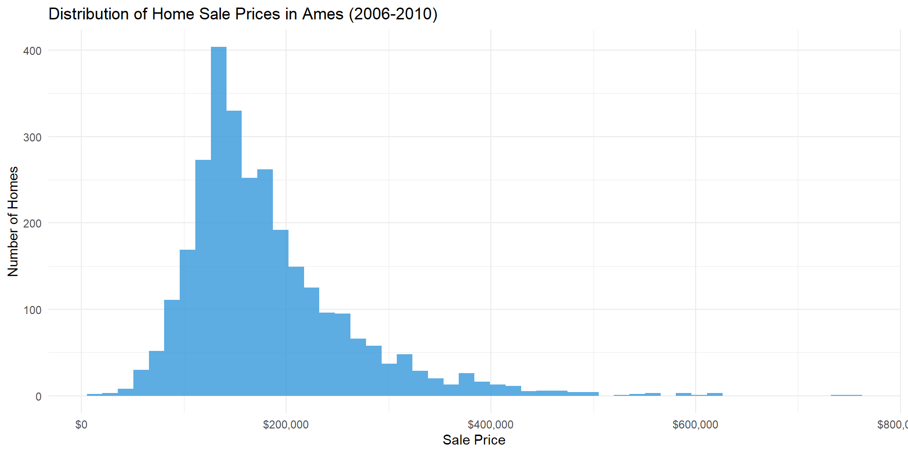

ggplot(ames, aes(x = SalePrice)) +geom_histogram(bins =50, fill ="#3498db", alpha =0.8) +scale_x_continuous(labels =dollar_format()) +labs(title ="Distribution of Home Sale Prices in Ames (2006-2010)",x ="Sale Price",y ="Number of Homes") +theme_minimal()

Next Steps
Now that we understand the data and variables, proceed to: - Exploratory Analysis for initial patterns - Price Drivers for hypothesis testing
Last updated: 2026-04-27
Source Code
---title: "Ames Housing Market Intelligence"subtitle: "A Data-Driven Guide for Real Estate Investment Decisions"author: "Pratik Mane"date: todayformat: html: code-fold: true---## Executive Summary**Audience:** Ames Real Estate Investment Group**Objective:** Identify key drivers of home values and optimal investment strategies using 2006-2010 housing market data.### Key Findings1. **Quality is King:** Overall quality rating is the strongest price predictor (+$32,000 per quality point)2. **Timing Matters:** Seasonal swing of $10,000-20,000 between summer (peak) and winter (trough)3. **Crisis Impact:** 22% price decline from 2007 peak to 2009 trough, with recovery beginning in late 20094. **Age Penalty:** Homes depreciate ~$XXX per year, renovation doesn't fully overcome this### Dataset Overview- **2,930 homes** sold in Ames, Iowa (2006-2010)- **82 variables** including size, quality, age, features, location- **Time period:** Captures housing bubble peak and financial crisis### NavigationUse the menu above to explore:- **Background:** Data description and methodology- **Exploratory Analysis:** Initial data exploration and patterns- **Price Drivers:** What features affect home values?- **Pricing Model:** Predictive model with 74% accuracy- **Market Timing:** Seasonal patterns and economic cycles- **Recommendations:** Actionable insights for investors, buyers, sellers---## Quick Start**For Investors:** See [Market Timing](timing.qmd) for buy/sell signals**For Sellers:** See [Recommendations](recommendations.qmd#for-sellers) for optimal listing strategy**For Buyers:** See [Price Drivers](price-drivers.qmd) for value hunting tips```{r setup, include=FALSE}library(tidyverse)library(scales)library(knitr)# Load dataames <-read.csv("data/ames.csv")``````{r quick-stats}cat("Dataset Overview:\n")cat("Total homes:", nrow(ames), "\n")cat("Average price:", dollar(mean(ames$SalePrice)), "\n")cat("Price range:", dollar(min(ames$SalePrice)), "to", dollar(max(ames$SalePrice)), "\n")```### Preview: Price Distribution```{r price-distribution, fig.width=10, fig.height=5}ggplot(ames, aes(x = SalePrice)) +geom_histogram(bins =50, fill ="#3498db", alpha =0.8) +scale_x_continuous(labels =dollar_format()) +labs(title ="Distribution of Home Sale Prices in Ames (2006-2010)",x ="Sale Price",y ="Number of Homes") +theme_minimal()```---## Next StepsNow that we understand the data and variables, proceed to:- [Exploratory Analysis](eda.qmd) for initial patterns- [Price Drivers](price-drivers.qmd) for hypothesis testing---**Last updated:** `r Sys.Date()`